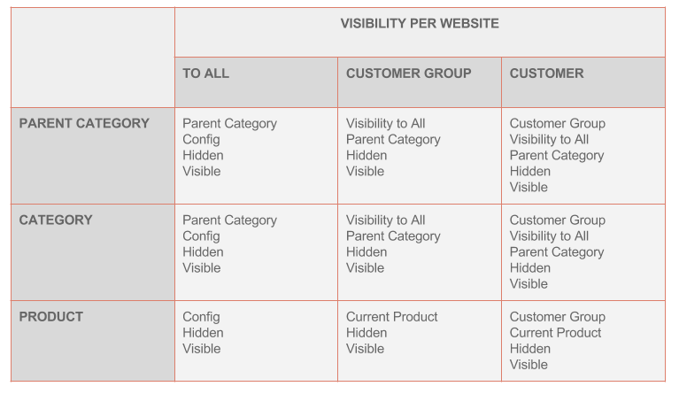
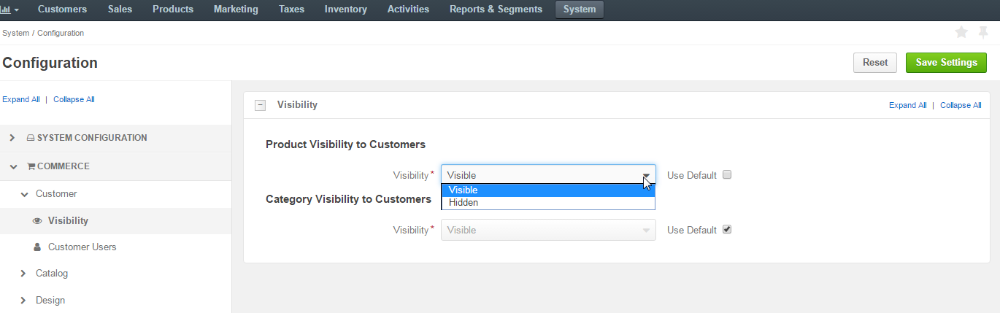
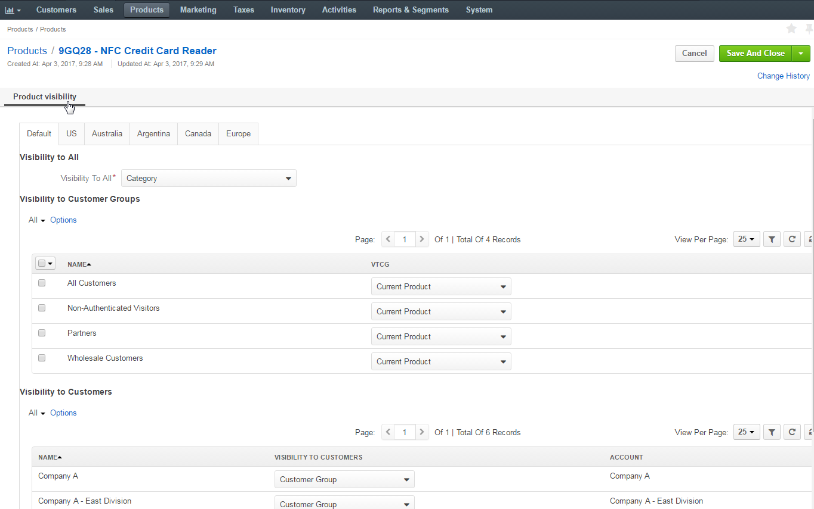
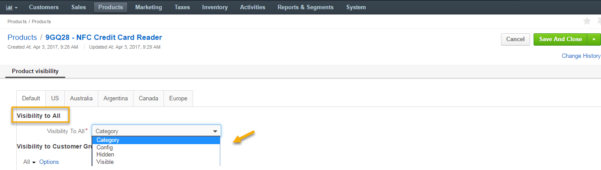
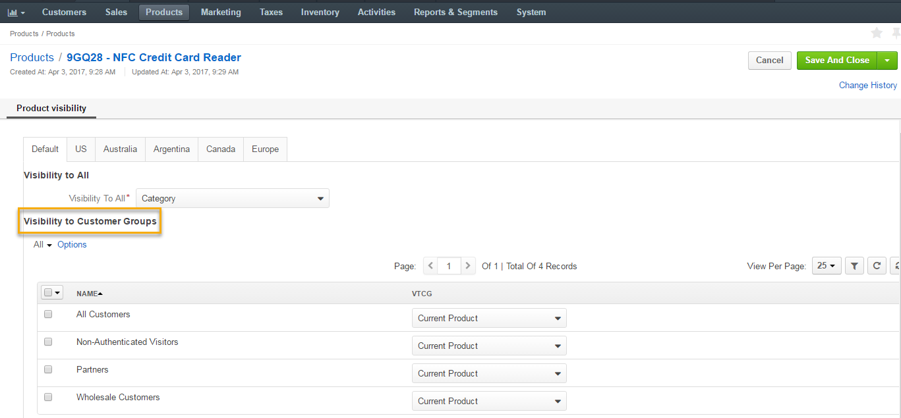
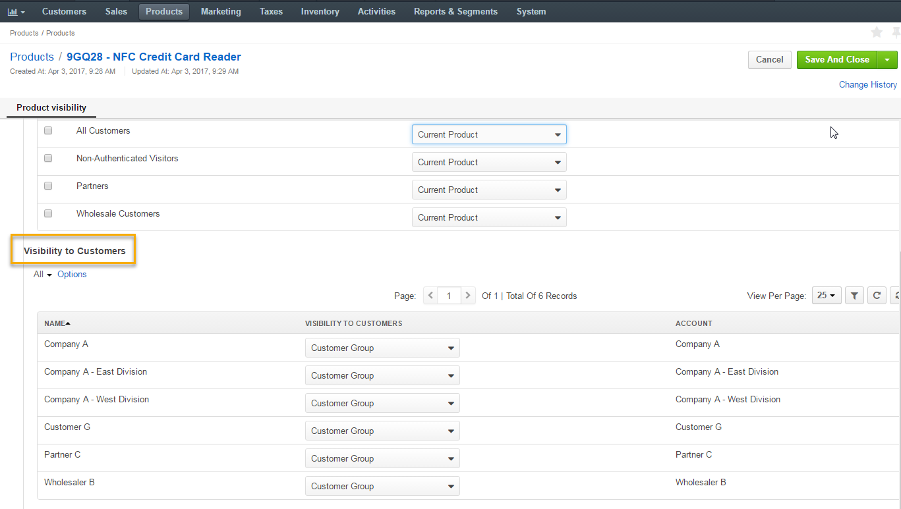
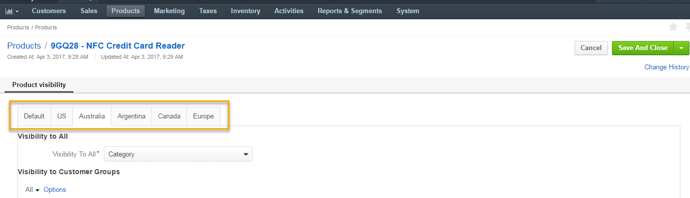

While a product on a website can be either visible or hidden for a customer, the way OroCommerce evaluates the product visibility might seem tricky.
Note
An administrator must have permissions to view a customer, customer groups, and websites to have access to the settings described in this section.
Whether the product is shown to the customer on the OroCommerce website depends on the following configuration:
Additionally, there are default visibility settings that may be easily inherited in the above configuration:
- System Configuration (system-wide)
- Visibility to All (per product/category).
Visibility Options
Generally, these are the available visibility settings:
- visible – Show the product in the catalog on the website.
- hidden – Hide the product from the catalog on the website.
- config – Inherit the visibility that is defined in the System Configuration for users of all accounts.
- product – Use the option that is selected in the Visibility to All section for the product.
- category – Use the option that is selected in the Visibility to All section for the product’s category.
- parent – Use the option that is selected in the Visibility to All section for the parent master catalog category.
- customer group – Use the option that is selected in the Visibility to a Customer Group that the customer is in.
Visibility Priorities
- The website visibility may be configured individually for each website. The visibility configured for a particular website has priority over the default website visibility.
- The product visibility has priority over the category visibility. If the product is visible but the category is hidden, the product is still visible.
- The category visibility has higher priority than the parent category.
- The customer group visibility overrides visibility for a customer within the same website.
Visibility per Website Table
The following table summarizes visibility options per website:
Note that the’config’ visibility type sets system-wide visibility for products and categories for existing customers.
You can define a system-wide visibility for products and categories for existing customers. This setting applies whenever visibility is set to ‘config’.
Products and categories are visible by default. To change this, navigate to System > Configuration > Commerce > Customer > Visibility in the main menu, clear the Use default check box, and toggle the options (hidden/shown).
The default visibility for a product or category is configured on the product’s Manage visibility page and in the Visibility section of the category details.
The possible options are:

- (parent) category – Inherit configuration from the parent category.
- config – Inherit settings from the System Configuration.
- hidden
- visible
These values may be later inherited or enforced for customers and customer groups (For this, their visibility must set to ‘product’ or ‘category’).
You can control if the product or category is shown to the customers who are members of a particular customer group. Use one of the following options:
- product – Inherit configuration from the product.
- category – Inherit configuration from the parent category.
- hidden
- visible
By default, a new customer group inherits the default product visibility from the product or category (depending on where the configuration happens).
Visibility to the customer supports same options as Visibility to a Customer Group and can also inherit the configuration of a customer group (by default).
For each product you can define whether it should be visible on a particular website. This might be necessary when a product, for example, requires special government permit in a particular country. A seller might hide it on the country’s local website until the paperwork is complete.
On the product visibility page, you can switch between websites and apply the necessary changes.
For new websites, the following default settings apply:
- Visibility to all inherits visibility configuration of the product’s category.
- Visibility to customer group inherits visibility configuration at the product level.
- Visibility to customer inherits settings for the customer group.